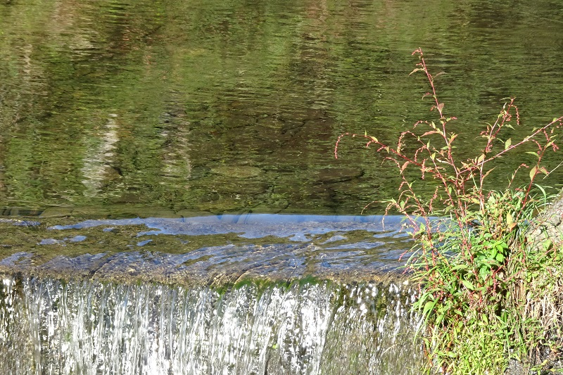

モーラン: チェロとピアノのための前奏曲
アーネスト・モーランは、1894年生まれだからヴォーン゠ウィリアムズ（1872年生まれ）よりも一まわり下の、同系統に属するイギリスの作曲家。前回のクラークと同じくスタンフォード門下である。この前後はよく知られているようにイギリス近代の優れた作曲家が沢山輩出し始めた時代で、それらの作曲家の作品は昔からCDもたくさん出ていたから、折に触れて探し、聴くようにしてきた。モーランもそうやって視界に入ってきた一人。だがその室内楽曲を聴くのは今回が初めてである。モーランは、第一次大戦従軍時の負傷やアルコール依存であまり長生きはできなかったけれども、生命力あふれる新鮮な作品を多く残している。チェロとピアノのための『前奏曲』は代表作というわけではないにしても、シンプルでとても親しみやすい、魅力的な小品である。チェリストのPeers Coetmoreとの出会いがきっかけで書かれたとのこと（1945年に結婚）。結婚の年に書かれた『チェロ協奏曲』とのつながりも見て取れる。
Ernest John Moeran:
Prelude for Cello and Piano
Timothy Gill (vc)
Mary Dullea (pf)
(2021)
このアルバムはモーランの室内楽曲だけを4曲収めていて、順に『ヴァイオリンソナタ』、『二つのヴァイオリンためのソナタ』、『前奏曲』、『ピアノ三重奏曲』という具合に4曲とも編成が異なっている。その配置のセンスがとてもよく、最初の『ヴァイオリンソナタ』で適度な緊張とともにベースになる雰囲気が決定され、続く民謡要素を一部ストレートに取り入れた『二つのヴァイオリンのためのソナタ』の無伴奏で高音に寄った響きを堪能した直後に、一段低いチェロの温かい旋律が鳴り出すと、何というか渇きが癒されるような、安心させられるような効果を生む。そして4つの楽章どれもが充実した内容を持つ『ピアノ三重奏曲』によって最後が華やかに締めくくられる。
数々の不幸に見舞われ弱さを見せながらも生涯作曲を続け、晩年アイルランドに自らのルーツを求めて移り住み、その地で嵐の日に亡くなったモーラン。その人生に思いを馳せながら聴くにふさわしい、秋の一日にも似たアルバムだった。

(Oct. 7, 2023)